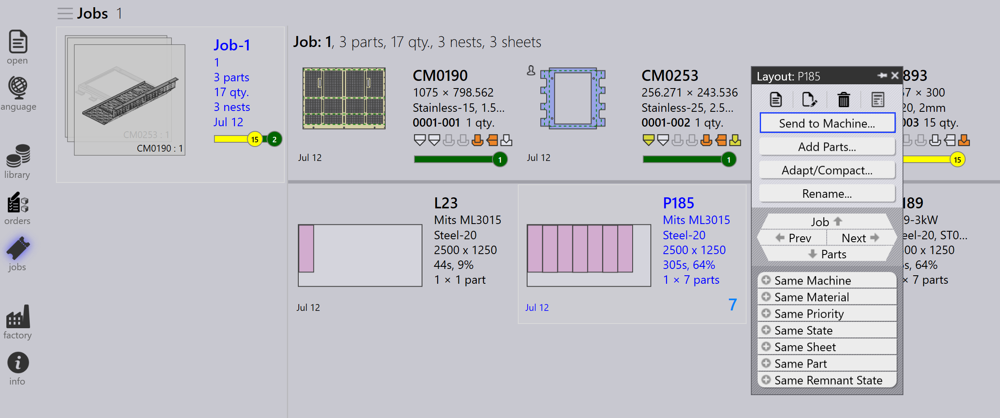
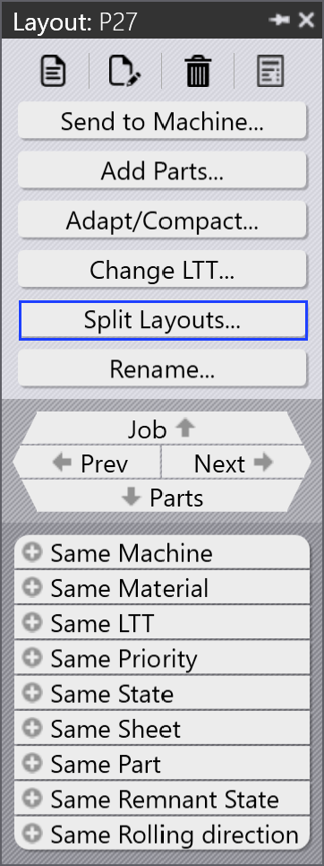

Layout paneel
Deze sectie legt layoutgerelateerde acties uit zoals Naar machine sturen…, Terugroepen van machine…, Uitvoeren exporteren, Markeren als voltooid…, Stukken toevoegen…, Aanpassen/compacteren…, Lay-outs splitsen…, en andere opties die worden gebruikt om layoutinstanties te beheren.

|
|


Naar machine sturen…
-
Wanneer een nest klaar is (gevuld of dringend nodig), kunt u het naar de machine sturen.
-
Klik met de rechtermuisknop op het nest en selecteer Naar machine sturen….
-
Een map wordt automatisch aangemaakt, genoemd naar het nest.
-
Outputbestanden (fxlyt, NC, rapport, csv) worden geëxporteerd naar de JOB outputlocatie.
-
Send to machine nesten worden getoond met een blauw vinkje.

| Eenmaal vrijgegeven, worden die nesten niet meer opnieuw geprobeerd voor opnieuw verpakken. |
Terugroepen van machine…
-
Als de output validatie of een update nodig heeft (bijvoorbeeld, meer onderdelen toevoegen):
-
Klik met de rechtermuisknop op de geëxporteerde layout.
-
Selecteer Terugroepen van machine….
-
-
De outputbestanden en de map (fxlyt, NC, rapport, csv) worden verwijderd.
-
Het nest wordt opnieuw bewerkbaar.
-
U kunt wijzigingen aanbrengen en het opnieuw naar de machine sturen.

Uitvoeren exporteren
-
Klik met de rechtermuisknop op een layout (nest) die naar de machine is gestuurd en klik op Uitvoeren exporteren.

-
De Export Outputs optie exporteert de NC-, Rapport- en Layoutbestanden naar de respectievelijke machine outputmappen.
-
Deze optie genereert het NC bestand opnieuw met de huidige eenheid instellingen voor de layout.
| Export Outputs is niet beschikbaar voor Layouts die Voltooid zijn en Layouts die in de wachtrij staan voor opnieuw verpakken. |
Mark complete
-
Zodra het nest is verwerkt op de machine, klikt u met de rechtermuisknop op het nest en selecteert u Markeren als voltooid….
-
U kunt meerdere nesten selecteren en ze tegelijkertijd als voltooid markeren.
-
Wanneer een nest als voltooid wordt gemarkeerd:
-
Wordt het uitgegrijsd, naar het einde van de lijst verplaatst en getoond met een groen vinkje.
-
Wordt de layout verwijderd uit de actieve layouts lijst.
-
Worden onderdeel- en jobstatussen bijgewerkt en verplaatsen verwerkte hoeveelheden naar de voltooide status.
-
Worden outputbestanden voor die layout verwijderd uit de machine outputlocatie om dubbel gebruik te voorkomen.

-
Stukken toevoegen…

-
Gebruik deze optie om meer onderdelen toe te voegen aan een relatief slecht verpakte layout. Net als Interactief Nesten, is dit een wizard-gestuurde optie en kan worden gebruikt op een enkele of meerdere layouts tegelijkertijd.
-
TruSmartCAM koppelt de Layout repack wizard in het hoofdwerkgebied wanneer deze optie wordt gebruikt. Houd de Ctrl toets ingedrukt en selecteer een of meer onderdelen die op de layout(s) moeten worden verpakt en druk op Volgende.

-
De geselecteerde onderdelen worden weergegeven in de volgende stap met een bewerkbare hoeveelheidskolom. Werk indien nodig de onderdeelhoeveelheden bij in het Update Qty veld. Klik op Volgende om door te gaan met het nesten. Let op dat hoeveelheden alleen kunnen worden verhoogd, niet verlaagd.

-
Alle layouts worden afzonderlijk genest en de nestresultaten worden weergegeven met de nieuw verpakte onderdelen erop geplaatst. Het selecteren van de layout toont alle bestaande layoutonderdelen. Het resultaat wordt automatisch verworpen als er geen nieuw onderdeel wordt geplaatst tijdens het opnieuw verpakken. Een layout met meerdere exemplaren kan resulteren in verschillende patronen na het opnieuw verpakken.

Aanpassen/compacteren…
-
Dit wizard-gebaseerde commando kan worden gebruikt om een layout aan te passen van één machine naar een andere wanneer de oorspronkelijke machine is uitgevallen of wanneer de machinewerklast moet worden gebalanceerd.

-
Het kan worden gebruikt wanneer de geplande plaat niet op voorraad is en de layout opnieuw moet worden gepland op een andere beschikbare plaat.
-
U kunt layouts verpakt op kleinere platen samenvoegen op grotere platen om materiaal efficiënter te gebruiken.
-
U kunt layouts verpakt op grotere platen splitsen in kleinere platen als grote plaatvoorraden niet beschikbaar zijn.
-
U kunt de verpakkingsefficiëntie van meerdere layouts (zelfs van verschillende machines) verbeteren door ze samen te voegen.
-
Om het te gebruiken, selecteert u een of meer layouts en klikt u op Aanpassen/compacteren… om de wizard in het werkgebied te openen.

-
Het linkerdeelvenster toont alle geselecteerde layouts en het Onderdelen deelvenster toont de layoutonderdelen.

-
Selecteer de doelmachine en plaatmateriaal, klik vervolgens op Volgende om het opnieuw nesten uit te voeren.
-
De nieuwe nestresultaten worden getoond in het resultatenpaneel.

-
Klik op Volgende om de aangepaste of gecomprimeerde layout op te slaan.

Een layout splitsen
De Lay-outs splitsen… optie stelt u in staat een bestaande layout te splitsen in meerdere layouts door hoeveelheden te wijzigen, zonder de noodzaak om tooling of nesten opnieuw te doen.
Deze functie is bijzonder nuttig in de volgende scenario’s:
-
Wanneer u een deel van de totale hoeveelheid onmiddellijk moet produceren terwijl de resterende hoeveelheid voor latere productie wordt gepland.
-
Wanneer productievereisten moeten worden verdeeld over meerdere diensten of dagen om workflow en resource-gebruik te optimaliseren.
-
Wanneer een specifieke machine tijdelijk niet beschikbaar of bezet is en u het layout moet aanpassen om te voldoen aan de huidige productiebeperkingen.
Om een layout te splitsen, voert u de volgende stappen uit:
-
Selecteer in de Layouts weergave de vereiste layout.

-
Klik op Lay-outs splitsen….

-
Voer de vereiste waarde in bij Nieuwe kopieën.

-
Klik op OK.

De geselecteerde layout is nu gesplitst in twee layouts met aangepaste hoeveelheden.